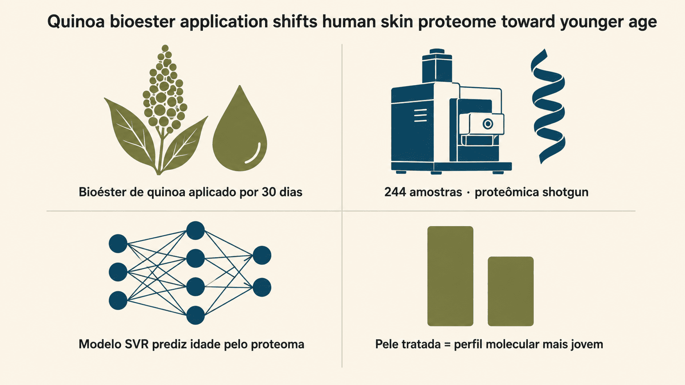
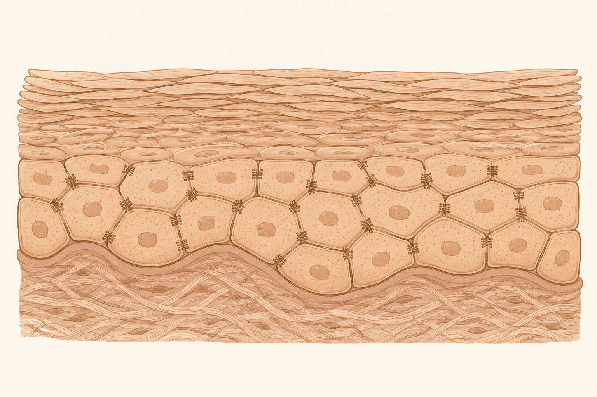
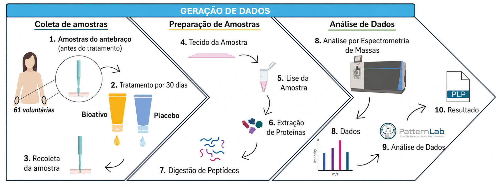
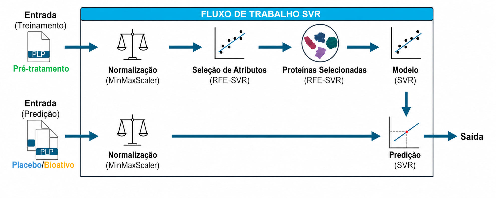
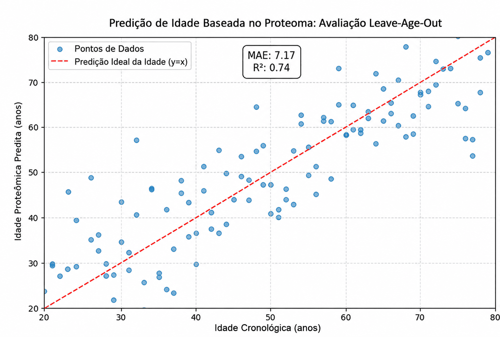
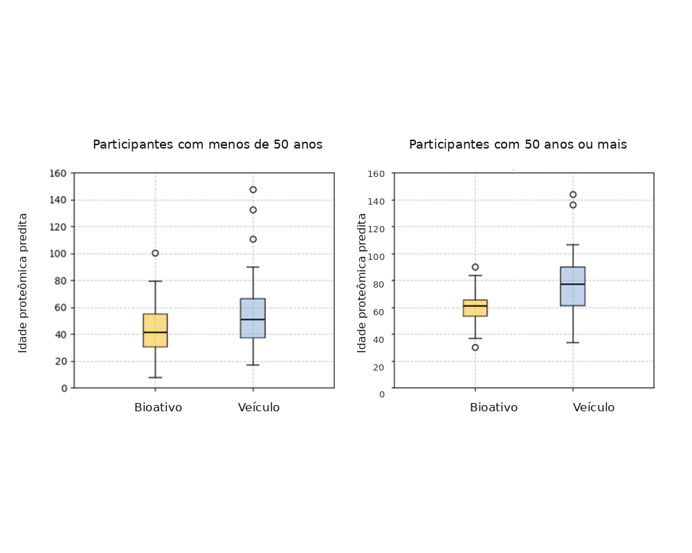
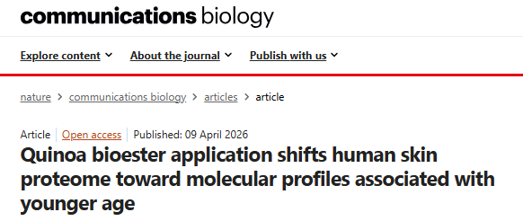

A pele conta sua idade — e a quinoa pode reescrever a resposta
Uma equipe com pesquisadores do Brasil, do Uruguai e dos Estados Unidos usou espectrometria de massas e aprendizado de máquina para "ler" milhares de proteínas da pele humana e mostrar que um bioativo derivado da quinoa desloca esse perfil molecular na direção de uma pele mais jovem.

A pele envelhece por dois caminhos — e nem sempre dá para ver
O envelhecimento intrínseco (genético, metabólico) reduz a produção de colágeno e a atividade dos fibroblastos. Já os fatores extrínsecos — sobretudo a radiação UV — aceleram esse processo, gerando espécies reativas de oxigênio (ROS) e ativando enzimas que degradam a matriz extracelular.
O resultado clínico é conhecido: perda de elasticidade, flacidez, rugas e uma barreira cutânea mais frágil. O que normalmente não se vê é a camada molecular por trás disso — e é justamente aí que entra a proteômica: o mapeamento de todas as proteínas presentes em um tecido, em um dado momento.

Antes do laboratório, 5 mil anos de história andina
O bioativo testado no estudo não nasceu em 2026 — ele parte de uma planta domesticada muito antes do Império Inca, e que sobreviveu a séculos de tentativa de apagamento.
Chenopodium quinoa é domesticada por povos andinos perto do Lago Titicaca (atuais Bolívia/Peru) — muito antes de existir o Império Inca.
Os incas chamavam a quinoa de chisiya mama — "grão-mãe", em quéchua — um alimento básico e culturalmente valorizado nos Andes.
Os colonizadores impuseram tributos pagos só em trigo ou cevada, forçando o abandono de cultivos andinos — o cultivo de quinoa caiu drasticamente, mas nunca desapareceu.
A FAO declara o Ano Internacional da Quinoa, reconhecendo seu papel na segurança alimentar mundial.
Um derivado esterificado da quinoa é testado com proteômica de ponta e inteligência artificial — a mesma planta, sob uma lente totalmente nova.
Não é só simbolismo: quimicamente, a quinoa é incomum. É um pseudocereal (semente de uma planta de folha larga, não uma gramínea) naturalmente livre de glúten e com um perfil proteico raro entre alimentos vegetais. O artigo original destaca que o bioéster usado no estudo é rico em ácidos graxos essenciais — sobretudo linoleico e oleico — e em compostos fenólicos, com atividade descrita na literatura como capaz de modular a diferenciação de queratinócitos, reforçar a barreira epidérmica e inibir a atividade de colagenase.
Por que a química da quinoa interessa à pele
Dá para medir o "rejuvenescimento" sem depender da opinião do pesquisador?
Estudos de proteômica costumam listar proteínas que "aumentaram" ou "diminuíram" — mas essa escolha pode ser enviesada por quem já espera encontrar sinais de melhora. A equipe propôs uma alternativa: treinar um modelo de aprendizado de máquina para prever a idade biológica da pele a partir do seu perfil proteico, e usar esse modelo, de forma cega, para testar se o bioéster de quinoa desloca a pele tratada para um perfil mais "jovem".
A análise estatística refinada (comparação pareada) foi conduzida com o módulo Pairwise Comparer do PatternLab for Proteomics, ferramenta desenvolvida no Instituto Carlos Chagas (Fiocruz, Paraná, Brasil) em colaboração com a Unidade de Bioquímica Analítica e Proteômica do Institut Pasteur de Montevidéu e do Instituto Clemente Estable (Uruguai) — parceria que também recebeu financiamento do FOCEM, o Fundo para a Convergência Estrutural do Mercosul.
Cada participante foi seu próprio controle

Cada uma das 61 mulheres recebeu o bioéster de quinoa em um antebraço e o veículo (sem o ativo) no antebraço oposto, aplicados duas vezes ao dia. A escolha de qual lado recebia o quê seguiu uma regra sistemática (idades ímpares e pares alternavam o lado), e nem participante nem avaliador sabiam qual formulação estava em qual braço — estudo cego.
Essa estratégia de desenho pareado intraindividual é o que permite comparar cada pessoa consigo mesma, reduzindo o ruído da enorme variabilidade biológica entre indivíduos — essencial num estudo com uma faixa etária tão ampla (20 a 80 anos).
O desenho pareado é o mesmo princípio usado em ensaios de curativos e coberturas para feridas crônicas quando se compara tratamento e controle no mesmo paciente: controla variáveis individuais (idade, genética, hábitos) que, de outra forma, se misturariam ao efeito real da intervenção.
O maior mapa proteômico de pele já produzido
Todas as 244 amostras foram analisadas em duplicata técnica, gerando 488 arquivos brutos de espectrometria de massas.
Segundo os autores, este é, até onde se sabe, o maior conjunto de dados proteômicos de pele já produzido — uma escala só viável com pipelines computacionais robustos, como o PatternLab for Proteomics.
Quatro famílias de proteínas contam a história da pele mais resiliente
Todas as proteínas abaixo foram identificadas em ambos os antebraços de pelo menos 30 participantes, com alterações estatisticamente significativas (p < 0,05) no antebraço tratado com bioéster de quinoa, em comparação ao veículo.
Adesão entre queratinócitos
Componente de desmossomos; mais DSG1 sugere maior firmeza e resistência mecânica da epiderme.
Adesão entre queratinócitos
Atua junto à DSG1 nos desmossomos, reforçando a coesão que o envelhecimento tende a afrouxar.
Diferenciação e hidratação
Essencial na formação do estrato córneo; sua degradação gera os "fatores naturais de hidratação" da pele.
Neutraliza radicais livres
Converte radicais superóxido em peróxido de hidrogênio e oxigênio, reduzindo dano oxidativo.
Equilíbrio redox celular
Ajuda a manter proteínas em seu estado redox funcional, protegendo a célula do estresse oxidativo.
Marcador de estresse oxidativo
Sua queda sugere menos estresse oxidativo — o oposto do que os autores observaram em pele facial cronicamente exposta ao sol em estudo anterior.
Controle da renovação da pele
Inibidoras de protease que equilibram degradação e renovação, protegendo colágeno e elastina.
Peptídeo antimicrobiano do suor
Reforça a defesa inata da pele, reduzindo o risco de infecções que agravam a inflamação e o envelhecimento.
Como ensinar um algoritmo a "adivinhar" a idade da pele
Em vez de escolher manualmente quais proteínas seriam sinal de "pele jovem", os autores treinaram um modelo de Regressão por Vetores de Suporte (SVR) — uma técnica de aprendizado de máquina — para aprender esse padrão sozinho, a partir dos dados.
Normalizar os dados
Os valores de abundância de cada proteína são reescalados para uma faixa comparável (0–1), garantindo que nenhuma proteína domine o modelo só por ter números maiores.
Selecionar as proteínas mais informativas (RFE)
A Eliminação Recursiva de Atributos remove, passo a passo, as proteínas que menos contribuem para prever a idade — sobra um conjunto mínimo, mas relevante.
Treinar com um "kernel" linear, por simplicidade
Entre opções mais complexas, os autores escolheram o modelo mais simples que explicasse os dados — a chamada navalha de Occam — reduzindo o risco de "decorar" ruído em vez de aprender um padrão biológico real.
Validar deixando uma idade de fora (Leave-Age-Out)
Para cada teste, o modelo é treinado sem nenhuma amostra de uma determinada idade, e depois tenta prever exatamente essa idade — simulando prever a idade de alguém "nunca visto" antes.


A pele tratada com quinoa "pareceu" molecularmente mais jovem
Com o modelo já validado, os pesquisadores o aplicaram às amostras pós-tratamento — que o modelo nunca tinha visto — comparando a idade proteômica predita entre o antebraço com bioéster de quinoa e o antebraço com veículo.

Participantes < 50 anos (n=30)
Diferença mediana: 11 anos · p = 0,14 (não significativo)
Participantes ≥ 50 anos (n=31)
Diferença mediana: 16 anos · p < 0,01 (estatisticamente significativo)
Barras ilustrativas construídas a partir das medianas relatadas no artigo (não são o boxplot original — use a Fig. 4 para os dados completos, incluindo quartis e outliers).
Os próprios autores fazem questão de destacar: essas diferenças não devem ser lidas como "anos biológicos" reais. Elas refletem um deslocamento direcional e consistente do perfil proteômico — um efeito mensurável, mas relativo, sujeito ao chamado domain shift (o modelo foi treinado só com pele não tratada).
Medida por bioimpedância, a hidratação da pele melhorou 111% a mais no grupo quinoa (Δ = 1,14 u.a.) do que no veículo (Δ = 0,54 u.a.), embora sem significância estatística isolada (p = 0,17) — um sinal que caminha na mesma direção dos achados moleculares.
Como esse efeito se compara a outras estratégias anti-idade?
Métodos diferentes de medir envelhecimento — parâmetros clínicos, relógios epigenéticos, perfis proteômicos — são como réguas diferentes: úteis, mas nem sempre diretamente comparáveis entre si.
| Estratégia | Via de ação | Efeito relatado na literatura |
|---|---|---|
| Vitamina C tópica | Antioxidante | ~10–15% de melhora em parâmetros de envelhecimento cutâneo |
| Tretinoína tópica | Remodelação de colágeno | Restauração de colágeno em pele fotolesada |
| Metformina (sistêmica) | Relógio epigenético | ~2–3 anos de desaceleração da idade biológica |
| Bioéster de quinoa (este estudo) | Multi-alvo (barreira, antioxidante, protease) | Deslocamento proteômico de 11–16 anos, mais pronunciado em ≥ 50 anos |
Da bancada de proteômica para a prática em saúde
Avaliação objetiva de coberturas e cosméticos
O mesmo raciocínio de comparação pareada (mesmo indivíduo, dois tratamentos) é aplicável ao avaliar curativos, hidratantes de barreira e protocolos de prevenção de lesões de pele em pacientes idosos.
Biomarcadores em vez de "achismo" clínico
Usar um preditor treinado por machine learning, e não a escolha manual de proteínas "favoritas", reduz o viés de confirmação — um princípio útil também na avaliação de qualquer terapia.
Pipelines de dados em escala biológica
45,7 milhões de espectros processados exigem infraestrutura computacional robusta (PatternLab, Python/scikit-learn) — um exemplo real de engenharia de dados aplicada à saúde.
O que este estudo ainda não pode afirmar
- —Um participante por idade. Uma única pessoa de 42 anos não representa toda a variabilidade biológica das pessoas de 42 anos.
- —População pouco diversa. Todas as voluntárias eram mulheres da mesma cidade, com fototipos de pele semelhantes (II a IV) — os autores recomendam expandir para diferentes etnias, regiões e fototipos.
- —Números não são "anos biológicos". As diferenças de 11 e 16 anos são um sinal direcional, não uma medida calibrada de idade real.
- —Sem corte de validação independente. O modelo foi treinado e testado em amostras dos mesmos indivíduos (antes/depois) — ideal para captar o efeito do tratamento, mas não para virar um "relógio" proteômico generalizável.
- —Conflito de interesse declarado. Nove dos quinze autores são funcionários do Grupo Boticário, empresa que desenvolve cosméticos — os autores afirmam que isso não influenciou desenho, análise ou interpretação, e o dado está declarado com transparência no artigo.
Do Mercosul à Califórnia: uma rede em três países
-
BR
Instituto Carlos Chagas — Fiocruz, ParanáLaboratório de Proteômica Estrutural e Computacional; desenvolvimento do PatternLab for Proteomics.
-
UY
Institut Pasteur de Montevidéu & Instituto Clemente EstableUnidade de Bioquímica Analítica e Proteômica, parceira na análise diferencial dos dados.
-
BR
Grupo Boticário & Universidade Positivo — ParanáFormulação do bioéster de quinoa, desenho experimental e coordenação do estudo clínico.
-
US
University of California, San DiegoISSCOR Center — colaboração adicional em pesquisa espacial de células-tronco aplicada ao grupo.
O financiamento reuniu agências dos dois países e do bloco regional: CNPq, CAPES, Fundação Araucária (Brasil), o FOCEM — Fundo para a Convergência Estrutural do Mercosul — e uma bolsa de colaboração internacional do CNPq, evidenciando como a ciência básica em proteômica se apoia em cooperação Sul-Sul.
Você entendeu o essencial?
Clique em cada pergunta para conferir sua resposta.
?Por que aplicar o bioéster em um antebraço e o veículo no outro, na mesma pessoa, em vez de comparar dois grupos diferentes de mulheres?
?O que o modelo de machine learning (SVR) foi treinado para prever, exatamente?
?Por que o efeito foi estatisticamente significativo (p<0,01) nas participantes com 50 anos ou mais, mas não nas mais jovens (p=0,14)?
Para pensar além do artigo
Sem resposta certa — o objetivo é exercitar o olhar crítico sobre a ciência que chega até você.
Todas as participantes eram mulheres da mesma cidade, com fototipos de pele semelhantes. Você esperaria os mesmos resultados em homens, em outras etnias ou em climas muito diferentes? O que seria preciso testar antes de assumir que sim?
O estudo colheu amostras do antebraço, não do rosto. Um efeito comprovado ali garante o mesmo efeito na pele facial — mais fina, mais exposta ao sol, com biologia diferente? O que você exigiria como evidência antes de fazer essa extrapolação?
Nove dos quinze autores trabalham na empresa que desenvolve o produto estudado. Isso, por si só, invalida os resultados? O que muda quando esse conflito de interesse é declarado com transparência — como aconteceu aqui — em vez de omitido?
Se um modelo de IA como esse "relógio proteômico" um dia chegar à prática clínica, que cuidados um profissional de saúde deveria ter antes de usar esse número para orientar uma decisão sobre um paciente real?
Um novo tipo de régua para medir "rejuvenescimento"
Em vez de confiar apenas na opinião de especialistas sobre quais proteínas "deveriam" mudar, este estudo propõe um caminho quantitativo e replicável: treinar um modelo de aprendizado de máquina para prever idade a partir do proteoma, e usá-lo — de forma cega — para testar se um tratamento desloca a pele para um perfil molecular mais jovem. O bioéster de quinoa passou nesse teste, com efeito mais marcado em mulheres a partir dos 50 anos, e abre caminho para que outras formulações cosmecêuticas sejam avaliadas com o mesmo rigor.

Camillo-Andrade, A.C., Sales, L.A., Catarino, C.M. et al. Quinoa bioester application shifts human skin proteome toward molecular profiles associated with younger age. Communications Biology 9, 775 (2026). doi.org/10.1038/s42003-026-10006-4
Dados de espectrometria de massas depositados no ProteomeXchange/PRIDE, identificador PXD062216. Código do pipeline SVR disponível em github.com/marlondms/AI-ON-SKIN, arquivado no Zenodo. Estudo clínico registrado no REBEC sob o nº RBR-9bhczry. Estudo aprovado pelo Comitê de Ética em Pesquisa do Instituto Oswaldo Cruz/Fiocruz (CAAE 38352020.8.0000.5248).